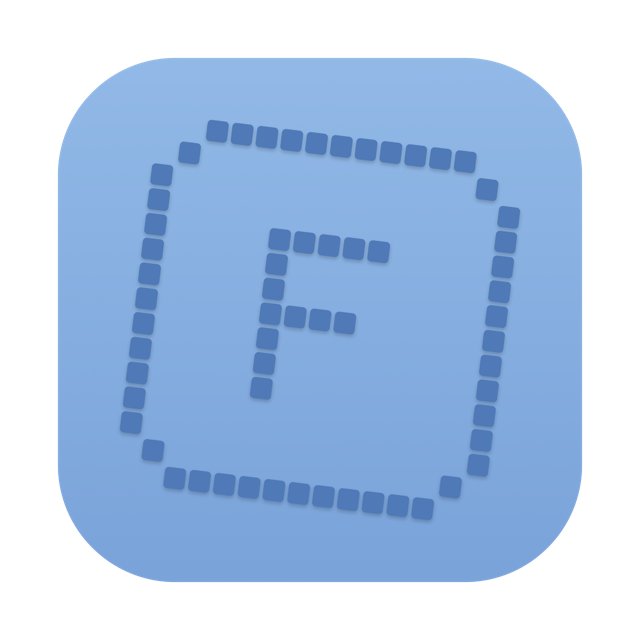
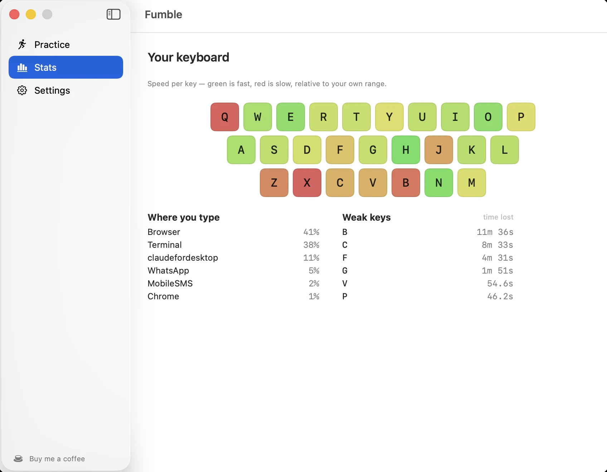
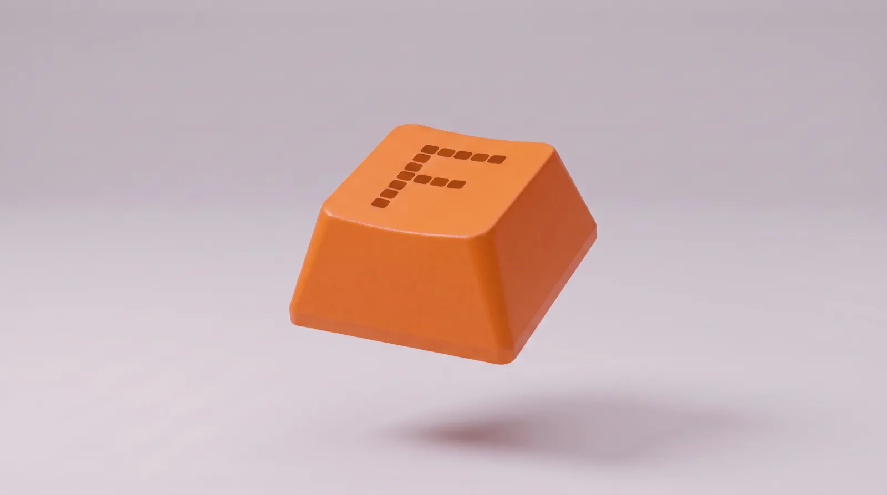

The typing coach that learns from your mistakes.
Download for MacFree·Open source·macOS 14 or later
It already knows what you're bad at
click and type this—wpm
Most typing tutors make you grind drills for hours before they learn a thing about you. Fumble sits in your menu bar and watches how you really type, then drills only the keys that cost you time.
Done. Click to go again.
- timeWeak keys are ranked by seconds lost, not by how slow they are. A key 40ms slow that you hit 2,000 times beats one 220ms slow that you hit 50 times.
- youEverything is judged against your own baseline. A 40 WPM typist and a 110 WPM typist get different answers.
- honestPastes, text expanders, autorepeat and idle time are left out of your WPM, and every exclusion is counted.
Which key and when. Never what you wrote
click and type this—wpm
Fumble records physical keycodes and timings, never characters. Nothing is saved that could replay your text, nothing is recorded in password fields, and there is no network code at all. Open source, so you can check.
Done. Click to go again.
The full account, including the small residual risk: PRIVACY.md


Free·macOS 14 or later·Signed & notarized·Needs Input Monitoring